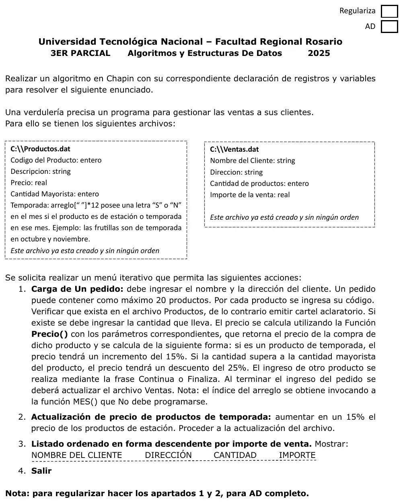

3° parcial, 2025 (Verdulería)
3° parcial y final, 15/10/2025
Enunciado


Propuesta de respuesta
Respuesta no verificada. La propuso Luta Studios con inteligencia artificial y ningún docente la revisó. Puede tener errores.
La hoja pide el diagrama de Chapin. Va un diagrama por módulo, con su declaración de variables arriba, y primero el del programa principal. Si un diagrama no entra en la pantalla, tocalo para verlo completo. Después de los diagramas está el mismo algoritmo en Python, para que lo puedas probar. Las sentencias de archivos van con las palabras reservadas de Python (open, pickle.load, pickle.dump, seek, tell). Los textos se completan con ljust para que los registros midan lo mismo. El tamaño de un registro sale de tell() después de leer el primero.
Menú iterativo
1. Carga de un pedido
2. Actualización de precio de productos de temporada
3. Listado ordenado por importe de venta
El mismo algoritmo en Python
Es el programa que se probó, con las mismas sentencias y en el mismo orden que las cajas. Cada Leer del diagrama es un input, convertido a int o float según la declaración, y cada Mostrar es un print.
import os
import pickle
class Producto:
def __init__(self):
self.codigo = 0
self.descripcion = ""
self.precio = 0.0
self.cantMayorista = 0
self.temporada = [" "]*12
class Venta:
def __init__(self):
self.nombre = ""
self.direccion = ""
self.cantidad = 0
self.importe = 0.0
# afProductos, afVentas: str
# alProductos, alVentas: archivo
afProductos = "C:\\Productos.dat"
afVentas = "C:\\Ventas.dat"
alProductos = open(afProductos, "r+b")
alVentas = open(afVentas, "r+b")
def BUSCA_PRODUCTO(cod):
# Secuencial: Productos.dat no tiene orden
# cod, tam, pos, p: int
# reg: Producto
tam = os.path.getsize(afProductos)
pos = -1
alProductos.seek(0, 0)
while alProductos.tell() < tam and pos == -1:
p = alProductos.tell()
reg = pickle.load(alProductos)
if reg.codigo == cod:
pos = p
return pos
def Precio(prod, cant):
# prod: Producto
# cant: int
# p: float
p = prod.precio * cant
if prod.temporada[MES()] == "S":
p = p + p * 15 / 100
if cant > prod.cantMayorista:
p = p - p * 25 / 100
return p
def CARGA_PEDIDO():
# cod, cant, pos, items: int
# resp: str
# total: float
# prod: Producto
# vta: Venta
vta = Venta()
vta.nombre = input("Nombre del cliente: ").ljust(30, " ")
vta.direccion = input("Dirección: ").ljust(30, " ")
items = 0
total = 0
resp = "Continua"
while resp == "Continua" and items < 20:
cod = int(input("Código de producto: "))
pos = BUSCA_PRODUCTO(cod)
if pos == -1:
print("No existe ese producto")
else:
alProductos.seek(pos, 0)
prod = pickle.load(alProductos)
cant = int(input("Cantidad: "))
while cant <= 0:
cant = int(input("Tiene que ser mayor que 0: "))
total = total + Precio(prod, cant)
items = items + 1
if items < 20:
resp = input("Continua o Finaliza: ")
while resp != "Continua" and resp != "Finaliza":
resp = input("Escriba Continua o Finaliza: ")
if items > 0:
vta.cantidad = items
vta.importe = total
alVentas.seek(0, 2)
pickle.dump(vta, alVentas)
alVentas.flush()
print("Importe del pedido:", total)
def ACTUALIZA_TEMPORADA():
# tam, pos: int
# prod: Producto
tam = os.path.getsize(afProductos)
alProductos.seek(0, 0)
while alProductos.tell() < tam:
pos = alProductos.tell()
prod = pickle.load(alProductos)
if prod.temporada[MES()] == "S":
prod.precio = prod.precio + prod.precio * 15 / 100
alProductos.seek(pos, 0)
pickle.dump(prod, alProductos)
alProductos.flush()
def ORDENA_VENTAS(tamReg, cant):
# Descendente por importe, con el método de la materia sobre el disco
# tamReg, cant, i, j: int
# ri, rj: Venta
for i in range(cant - 1):
for j in range(i + 1, cant):
alVentas.seek(i * tamReg, 0)
ri = pickle.load(alVentas)
alVentas.seek(j * tamReg, 0)
rj = pickle.load(alVentas)
if ri.importe < rj.importe:
alVentas.seek(i * tamReg, 0)
pickle.dump(rj, alVentas)
alVentas.seek(j * tamReg, 0)
pickle.dump(ri, alVentas)
alVentas.flush()
def LISTADO():
# tam, tamReg: int
# vta: Venta
tam = os.path.getsize(afVentas)
if tam == 0:
print("No hay ventas")
else:
alVentas.seek(0, 0)
pickle.load(alVentas)
tamReg = alVentas.tell()
ORDENA_VENTAS(tamReg, tam // tamReg)
print("NOMBRE DEL CLIENTE / DIRECCIÓN / CANTIDAD / IMPORTE")
alVentas.seek(0, 0)
while alVentas.tell() < tam:
vta = pickle.load(alVentas)
print(vta.nombre, vta.direccion, vta.cantidad, vta.importe)
# Programa principal
# opcion: int
opcion = 0
while opcion != 4:
print("1. Carga de un pedido")
print("2. Actualización de precio de productos de temporada")
print("3. Listado ordenado por importe de venta")
print("4. Salir")
opcion = int(input("Opción: "))
while opcion < 1 or opcion > 4:
opcion = int(input("Opción inválida: "))
match opcion:
case 1:
CARGA_PEDIDO()
case 2:
ACTUALIZA_TEMPORADA()
case 3:
LISTADO()
alProductos.close()
alVentas.close()Respuesta no verificada. Puede tener errores.
Se armó con la hoja del examen y la página del 3° parcial y final (registros como clase, recorrer, búsquedas, actualizar un registro y alta). Las operaciones de archivos siguen las diapositivas de merge y corte de control. El Chapin sigue la forma de las diapositivas del examen de Historia Clínica de 2019. El orden en el disco sigue la sección «Ordenar un archivo».
Quedó en duda: El punto 2 sube un 15% el precio guardado y el punto 1 suma otro 15% a los productos de temporada. Si se hacen los dos el mismo mes, el aumento se aplica dos veces. Preguntá cuál de los dos manda. Si un producto es de temporada y además supera la cantidad mayorista, se aplican los dos, primero el aumento y después el descuento. MES() se usa como índice directo del arreglo. Si devuelve el mes de 1 a 12, va MES() - 1. «Cantidad de productos» de Ventas.dat se leyó como cuántos productos tiene el pedido, hasta 20. Con 20 el pedido se cierra solo. El listado ordena Ventas.dat en el disco. También se puede pasar a un arreglo y ordenar en memoria. Los archivos se abren con r+b porque ya están creados. Los modos de open (rb, r+b, w+b) salen de la tabla de dos resúmenes de alumnos, que ningún apunte de la cátedra trae. Las diapositivas de la materia no muestran en Chapin la lectura de datos ni la selección múltiple. Acá van como Leer y como Según, con una columna por caso.
¿Cómo te fue?
Marcá cada tema del examen.
- ArchivosSecuencial y de acceso directo, en 3° parcial y final
- RegistrosRegistros, en 3° parcial y final
- OrdenamientoOrdenamiento, en 2° parcial